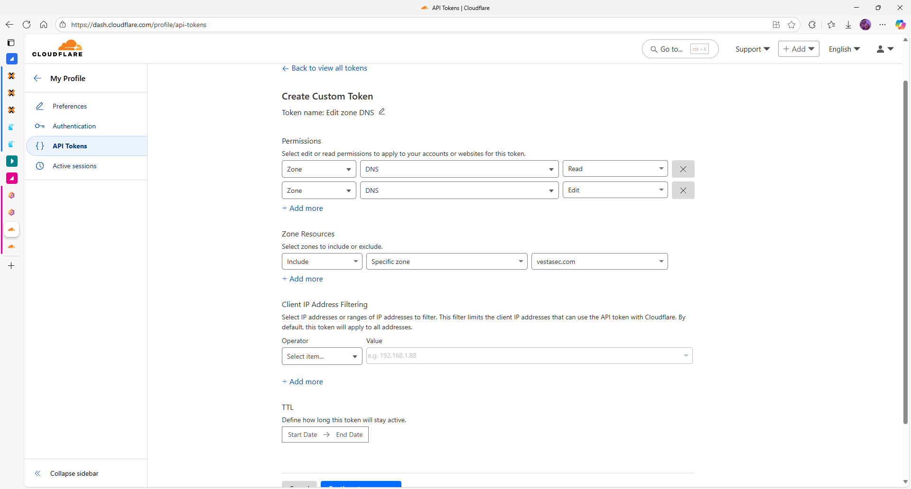
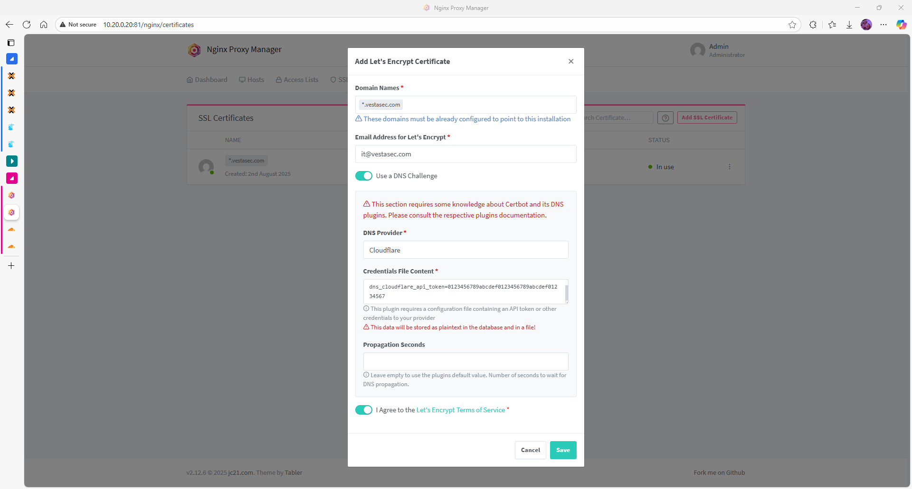
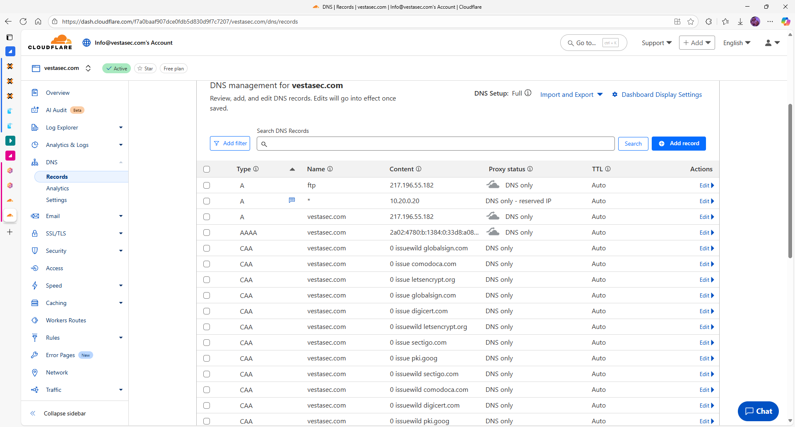
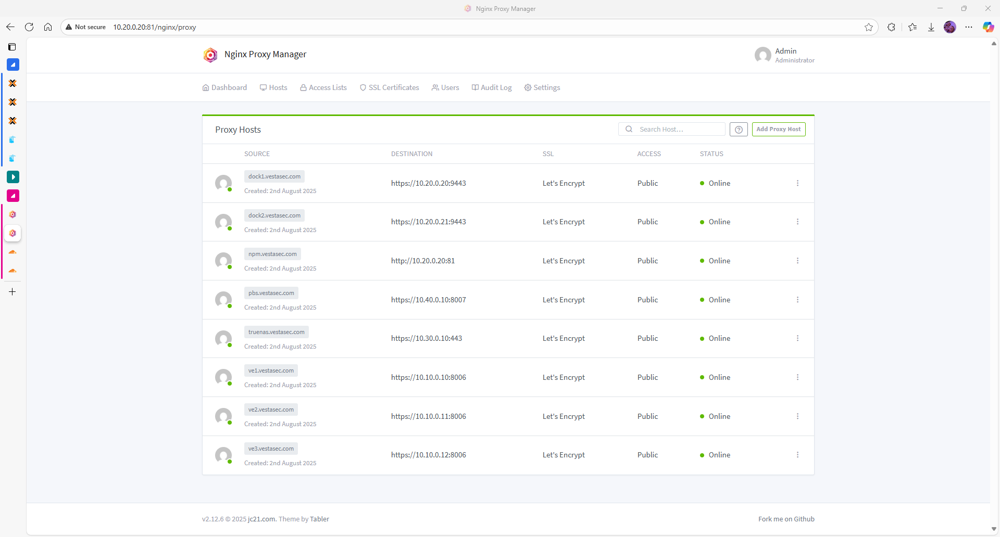

Configuration of Nginx Proxy Manager (latest)
Introduction
This guide covers the initial and advanced configuration options available through the web GUI of Nginx Proxy Manager. After deployment, most tasks can be managed from the browser.
First Login
- Go to:
http://<IP_of_dock1>:81 - Login with default credentials:
- Email:
admin@example.com - Password:
changeme - You will be required to:
- Set a new password
- Change the admin email address
Change Admin Email & Password
- Navigate to the User icon (top-right) → Edit Account
- Update:
- Email address (e.g.,
admin@lab.local) - Password
- Save changes and re-login if needed
Add a Proxy Host
- Go to Hosts → Proxy Hosts
- Click Add Proxy Host
- Fill in:
- Domain Names: e.g.
app.vesta.local - Forward Hostname/IP: internal IP of target service
- Forward Port: 80 or 443
- Optionally enable:
- Block common exploits
- Websockets support
- Under SSL tab:
- Enable SSL
- Request a Let's Encrypt certificate
- Agree to terms
- Optionally enable HTTP/2 and HSTS
- Click Save
Setup Wildcard SSL with Cloudflare (Recommended)
To issue wildcard certificates using Let's Encrypt and Cloudflare DNS challenge:
1. Create an API Token in Cloudflare
Go to https://dash.cloudflare.com/profile/api-tokens
- Choose: Edit Zone DNS
- Permissions:
- Zone → DNS → Read
- Zone → DNS → Edit
- Zone Resources:
- Include → Specific zone →
vestasec.com - Copy and save the generated token.

2. Create wildcard certificate in NPM
- Go to SSL Certificates → Add SSL Certificate
- Enter
*.vestasec.comas domain - Use DNS Challenge → Select Cloudflare
- Paste credentials:
dns_cloudflare_api_token=your_token_here
- Accept Let's Encrypt terms and click Save

3. Setup DNS A Record
- In Cloudflare DNS settings:
- Create
Arecord for*→ points to public IP or internal IP (10.20.0.20) - Set proxy mode to DNS Only during cert issuance

4. Add Proxy Hosts
Once cert is issued, you can add proxy hosts like:
dock1.vestasec.comve1.vestasec.com
Each will automatically use the wildcard certificate.

SSL Certificate Management
- All requested certs will appear under SSL Certificates
- You can:
- Reissue or delete certificates
- Create self-signed certificates if needed
- Import existing certificates manually
Access & Logs
| Location | Description |
|---|---|
/data/logs/ |
Contains access and error logs |
| Web GUI → Logs | Filter per host or global |
| Docker logs | Use docker logs -f npm for real-time |
Backup and Restore
- Go to Settings → Backup
- Download configuration
- Restore from file during new deployments
Best Practices
- Use subdomains for each service (e.g.,
grafana.lab.local) - Set automatic SSL renewal (default is enabled)
- Avoid exposing the admin panel to the public internet